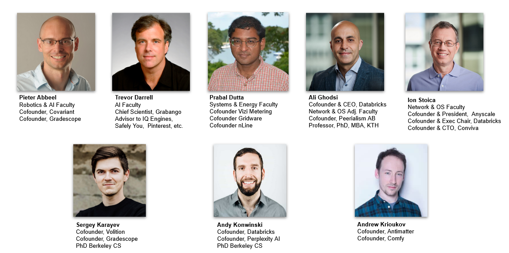
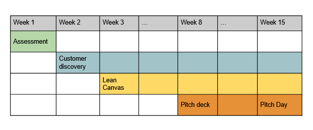
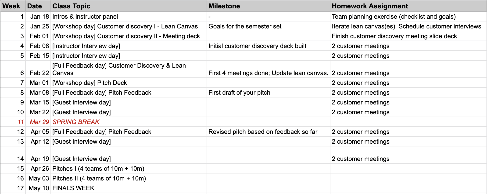

Research to Startup Launchpad - Spring 2023
Instructors

Objective
This class is for teams of PhD students who are…
- working on a startup that already exists,
- or will create a startup during the class,
- or are planning on creating a startup in the next year.
This class is taught by people who started companies as Berkeley CS Professors and PhDs just like you. This is the class that we wish we had.
Working in a small-group workshop format, we will help you refine your startup through iteration on the product, the market fit, and the pitch. We will provide support for critical milestones including cap table negotiations, first user discovery, and first fundraise.
We will connect you to a large network of CS PhD and faculty founders via guest lectures and office hours. The network includes founders and executives at over a dozen unicorns.
This class is a successor to our Research to Startup Intro class. Whereas that class was a high level introduction to startups, this class is specifically targeted towards students already working on or soon to be founding a startup.
Course Admission
To apply, students must have a startup idea and team of 1 or more people. Teams must apply (link to form below) to join. We expect to have many more applications than we have room for in the class and we will be prioritizing PhD and postdoc founders. Teams will be admitted as a group. Non-student and former-student team members are ok and if their team is admitted, they will be allowed to fully participate with their teams in the course.
Class size is capped at the lesser of approximately 20 students or 8 teams to ensure lots of time for feedback & hands-on support.
Schedule
High Level Schedule

Detailed Schedule
